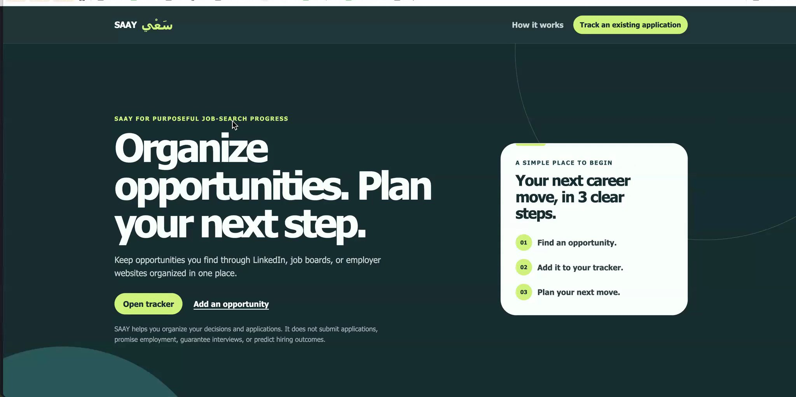
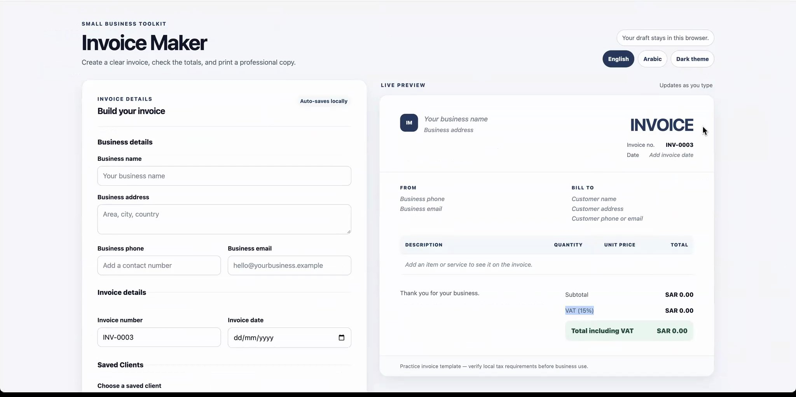

Mastering AI for Graduate Employability and Entrepreneurship
Ready to get hired. Ready to build their own.
In September and October 2026, 39 of your final-year students used AI to build working apps in three days: job trackers, CV builders, an invoice maker for Saudi small businesses. None of them had ever built anything with AI before. We'd like to give your graduating class the same results, online.
0had built anything with AI beforeevery student started from scratch

Employability: a job application tracker, by Shaima Alharmali, industrial engineering

Entrepreneurship: an invoice maker for Saudi small businesses, by Munira Alqahtani, accounting
Two outcomes
What every graduate leaves with
Each student builds a working app with AI. That one piece of work pays off two ways.
01 · Employability
A stronger case to employers
Graduates walk into interviews with a live app they built. They can open it, explain the problem it solves, and show how they built it with AI.
They leave with
A live app, linked from their CV
An interview-ready story: the problem, the approach, the result
Proof they can pick up new tools fast
02 · Entrepreneurship
The skills to build a business
Graduates learn to turn an idea into a working product in days, without hiring a developer. It's how a founder tests an idea before spending money on it.
They leave with
A working product, published online
A repeatable way to go from idea to product with AI
A Keep Building Pack to carry on after the program
Demo Day
The top five from each cohort, and how we chose them
On-time submission came first. The team then reviewed, scored and ranked every project on four weighted criteria. Five from each cohort were demonstrated live, in no particular order.
35%it works
25%fits the brief and is useful
20%easy to use, works on a phone
20%creative design
Women's cohort · Demo Day 30 September
Five projects. Click each button to see that project.
Invoice Maker
Invoice maker
Munira Mansour Alqahtani · accounting · first time using AI
“One of the best experiences of my three years of college. It taught me a lot, and opened my mind.”Ali Hassan Al-Shehri, industrial engineering
“Three days ago, I couldn't make a website. Today I'm creating my own.”Abdulaziz Abdullah Alshehri, physics
“When I started, I was calling my dad a thousand times because I couldn't open a file. When I looked at my website for the first time, it was like, oh my gosh, it's easy.”Jenan Abdulrahman, translation
“I already showed it to my family. They told me: if we want a trip, we will use your website.”Mohammed Ali Alhassan Sarhan, on Breathe Abha
Why now
Employers pay for AI skills. The Kingdom is betting on small business.
Employability71%
Leaders pick AI skills over experience
71% of surveyed leaders would hire a less experienced candidate with AI skills over a more experienced one without them. 66% would not hire someone without AI skills.
Microsoft and LinkedIn · 2024 Work Trend Index · May 2024Read the source ↗
Employability62%
AI skills come with a wage premium
Jobs requiring specific AI skills carried an average 62% wage premium. They grew 69%, against 9% for the overall job market.
Vision 2030 aims to raise small and medium businesses' share of Saudi GDP from 20% to 35% by 2030. Those businesses need founders who can build.
Monsha'at, General Authority for Small and Medium Enterprises · corporate strategyRead the source ↗
Two graduates apply for the same job. Both have degrees. One opens a laptop and shows an app they built to solve a real problem.
The program
Three steps, delivered online
The program your students completed in September and October, moved online so it can reach far more of them. Each step builds toward both outcomes.
Learn to build
A live online workshop. Each student builds a web page with AI and publishes it.
Build a product
An app from their field, a career need or a business idea. Our team guides and supports them.
Show it
An online Demo Day. Students present their app the way they would to an employer or a customer.
You bring the students. We deliver the program.
What KKU provides
The students, college by college
Dates for each cohort
A coordinator in each college to confirm
What we provide
Instructors and the curriculum
Technical support while students build
Judging and an online Demo Day
A Keep Building Pack for every student
KKU doesn't need to write a new curriculum or hire its own AI instructors.
Who delivers it
Coach Foundation × FLOW Management Consultancies
The same team that ran the program at KKU.
Coach Foundation
14 years in business, with an audience of around 100,000. Around 30 of our non-technical staff have built close to 40 working AI applications. Our AI support system answers about 90% of questions before a person steps in.
What we teach, we use every day.
FLOW Management Consultancies
Our partner at KKU. The AI program ran as part of FLOW's work with the university.
FLOW brings experience in leadership development and university programs.
“Three days ago, none of you knew how to code with AI and build something that was actually useful for people. And here we are today.”Sai Blackbyrn, founder and CEO of Coach Foundation, to the women's cohort on Demo Day